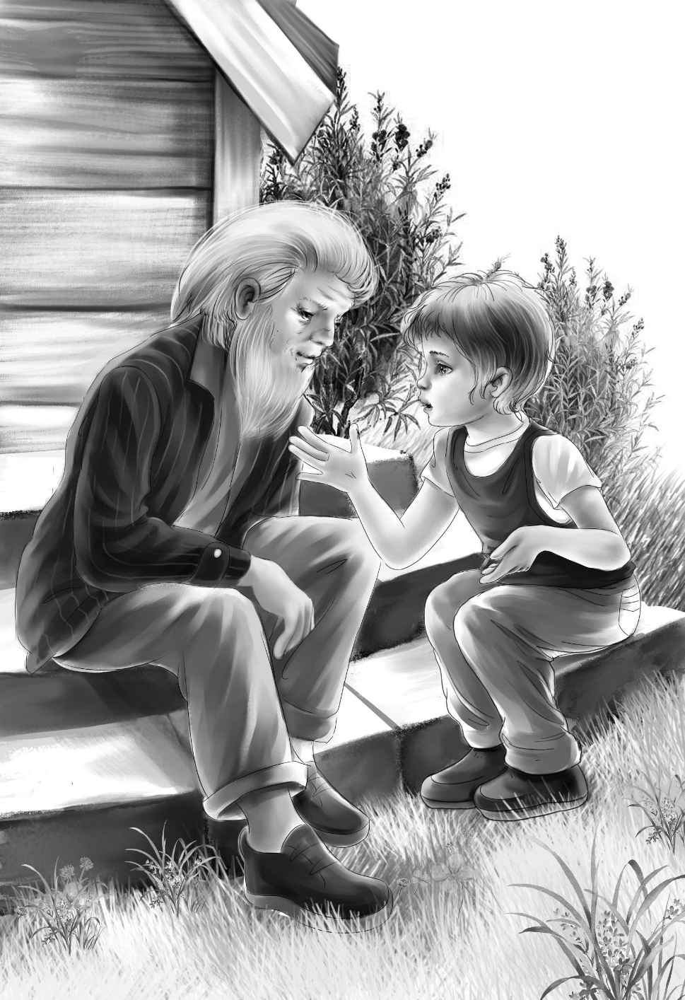

It was true. Benny was not there.
“Oh， what has happened to Benny？” said Jessie， beginning to cry.
“Now，don’t let’s get upset，” said Joe’s strong voice. “I think I know what has happened. Benny has gone off by himself to find the hermit. He hasn’t been gone long， and we can surely find him. Don’t you cry， Jessie. We’ll go and hunt for him.”
“Wouldn’t we save time by asking Jim？”asked Henry.
“Right，” said Joe. With that， they all ran back to Jim’s Place.
Jim came to the door when he saw them running toward him.
“We’ve lost Benny！” cried Jessie. “You know which way to hunt， don’t you？ We think he went to find the hermit and surprise us.”
“Well， now，” said Jim， “the first thing， don’t you get scared. We’ve got Indians here in Old Village that can find anything in these woods. The little boy hasn’t been gone long. Did you ask the little Indian girl to help you？”
“Oh， dear，” said Violet. “I forgot all about the Indian girl. I just dropped the basket and ran. We all did.”
“Better go back， then，” said Jim. “I’ll go with you. Rita is a better guide than I am. She can walk in the woods and never make a sound.”
When Jim told Rita， she stood up at once and looked sharply into the woods. “I saw the little boy at first，” she said. “But I did not notice when he went. I’m very sorry. We’ll start this way.”
Rita leaned over and looked at a bush. “Yes， I think he went down this path. Keep right behind me. It is easy to get lost in these woods if you get off the path.”
It was a strange sight—six people walking behind the Indian girl in a straight line down the path. Sometimes it seemed as if there were no path at all.
Jessie walked just behind Rita. Soon she said， “Rita， Benny would never know this was a path. He may have gone off it long ago.”
“No， he couldn’t， a little boy like that，” said Rita. “He couldn’t get through. This is the only way he could go. He went this way all right. I can see where he stepped， and this is the way to the old hermit’s cabin.”
On they went， over rocks and stones and branches.
“Now， call him，” said Rita， turning around.
Henry put his hands up like a cup and called “Ben-ny！”
Then Joe did the same.
They all listened. There was no answer.
“We’ll find him just the same，” said Rita shaking her head. “If I can’t， my father can.”
They all hurried on. For a long time they walked without talking.

Suddenly the Indian girl stopped. “Be careful now，” she said. “We are near the hermit’s cabin. If we scare him， the hermit will run away， and then he won’t help us.”
Slowly and quietly they all walked along the path. Then all at once they saw the cabin. They stopped. For on the steps sat an old man with a long white beard. Beside him， smiling and talking away happily， sat Benny.
“Oh， Benny！”whispered Jessie.
“Sh！” said Rita.
But the hermit had seen them. “Come，” he said to Benny， taking his hand. “You are lost.”
Jessie could not wait. She cried out， “Oh，Benny， you scared us so！” With that， everyone began to talk to Benny， so nobody could understand a word.
“The hermit is nice，” said Benny when he could make them hear. “He was going to take me back when I got ready to go. His name is Dave Hunter.”
“That’s right，” said Jim. “His name is Dave Hunter.”
But the hermit surprised them all by turning his back. He went straight back to his cabin，went in， and shut the door.
“That’s the way he is，” said Jim. “He won’t talk.”
“He talked to me，” said Benny.
“Most anyone would talk to you， little boy，”said Jim with a smile. “Dave won’t come out again， so we might as well go back.”
Rita led the way back， and Henry put Benny right in front of him where he could watch him all the way.
As they walked along， Jim said， “You people might as well stay overnight. You can cook your own trout.”
“I think we must stay，” said Alice. “Violet needs a good night’s sleep after that scare. We all do.”
At the village again， they stopped to say good-by to Rita. Henry put some money into her hand. “We’ll see you again about the basket，Rita，” he said. “We were all upset about Benny.”
“I understand，” said Rita with a smile.“I wouldn’t like to lose Benny myself.”
When they reached the little house，Jim said，“You can stay here as long as you want. Walk right in. If you want anything， come over and ask me. Maybe I’ll have it.” With that， he left them to go into the house alone.
They went up the front steps. Henry pushed open the door and they all went in. They found a small room with a fireplace. There were a few chairs and some folding cots leaning against the wall. There was one big chest of drawers.
Alice and Jessie soon found the next room which was a bedroom. Then they found the kitchen.
“There isn’t any upstairs，” called Benny.“Just downstairs.”
“Oh， Violet！” cried Jessie. “Do look at this dear little kitchen stove！ I wish we could get our own supper.”
“Jim said that campers do keep house here，”said Alice. “And think of Benny’s big trout. It would be fun to cook it ourselves.”
“Doesn’t this make you think of keeping house on Surprise Island？” cried Henry. “We’ll need wood for the stove and some potatoes to go with our fish. I’ll go over and ask Jim to sell us some.”
“I will go with you，” said Benny.
“Right，” said Henry， “so you won’t get out of my sight.”
“I really didn’t mean to，” said Benny. “I was coming right back. I wanted to surprise you and find the hermit first. He said I ought to go right back， and he would take me himself. He likes to live alone.”
Joe began to set up the cots. “How’s this，Violet？” he said. “You three girls take the bedroom. I’ll put three cots up for you. Then we three men will sleep in the living room.”
“That’s wonderful， Joe，” said Violet. “But let’s make our own beds with our blanket rolls. We love to make beds.”
“Well， I don’t，” said Joe. “I’ll certainly let you make mine. I’ll just set up the cots.”
The afternoon was passing quickly away. Benny soon came back with the fish and potatoes. Henry carried a big basket of wood.“Nice，dry wood，” he laughed.
Benny said，“I never thought I would just love dry wood.”
Then they went out again to the canoes and brought up the packs. Soon Jessie and Alice had a fine fire going in the stove， while Violet got the potatoes ready.
“I think we’ll eat in the kitchen，” said Henry looking around. He pulled the table into the middle of the room. “Benny， see if you can find six chairs.”
Violet found some heavy white plates， and set the table. Jessie cut the fish into six pieces before she cooked it. Then she put it in a big pan. For the first time in many days， they all sat down on real chairs to eat a meal at their own table. When they had finished supper there was no food left at all.
Before long the dishes were washed， the beds were made， and everything was ready for the night. But it was not yet dark.
“Let’s go out and sit on the front steps，” said Jessie. “We don’t want to go to bed yet.”
The family went through the little house and sat down on the wooden steps. A soft wind was blowing through the trees. Soon a toad hopped out from under the steps.
“He lives there，” said Benny. “I like to have toads living under our steps.”
“They come out at night，” said Joe.“They catch bugs.”
“You know， I feel as if something will happen soon，” said Violet slowly.
Alice turned to look at her. “That’s funny，Violet，” she said. “I feel as if we had done this before. Almost as if we had a clue and didn’t know it.”
Joe surprised them all by saying， “I feel that way， too.”